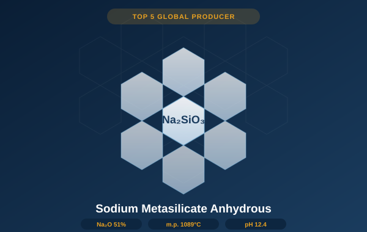

Top 2 in China, Top 5 globally. High-purity granular or powder form with Na₂O 51% ±1% and melting point 1089°C. The industry standard — we literally wrote it (HG/T 2568-2021).

Sodium metasilicate anhydrous (Na₂SiO₃) is an inorganic compound produced by fusing high-purity quartz sand with sodium carbonate at high temperatures — a process we have refined over 15 years to achieve consistent purity, whiteness, and particle uniformity. As the main drafter of China's national industry standard HG/T 2568-2021, we set the benchmark that the rest of the market follows.
With Na₂O content of 51% ±1% and SiO₂ at 45%, our anhydrous sodium metasilicate provides strong alkalinity (pH 12.4 at 1% solution), excellent detergency, and superior corrosion inhibition against metal surfaces. The absence of crystal water gives it outstanding stability in the presence of bleaching agents and oxidizers — making it the preferred choice for heavy-duty industrial cleaning formulations.
As global and US state regulations restrict phosphate-based detergent builders, anhydrous sodium metasilicate stands out as a high-performance, phosphate-free STPP replacement that maintains or exceeds detergent efficacy while meeting EPA Great Lakes phosphate restrictions and equivalent EU directives.
| Parameter | Premium Grade | First Grade | Standard Grade |
|---|---|---|---|
| Chemical Formula | Na₂SiO₃ | ||
| Molecular Weight | 122.06 g/mol | ||
| Na₂O Content | 51% ± 1% | 51% ± 1% | 51% ± 1% |
| SiO₂ Content | 45% | 45% | 45% |
| Fe (Iron) | ≤ 0.015% | ≤ 0.030% | ≤ 0.060% |
| Water Insolubles | ≤ 0.15% | ≤ 0.20% | ≤ 0.30% |
| Whiteness | ≥ 85 | ≥ 80 | ≥ 70 |
| Transparency (1% sol.) | ≥ 80% | ≥ 70% | — |
| pH (1% solution) | 12.4 | ||
| Melting Point | 1089°C | ||
| Bulk Density (granular) | 0.90 – 1.10 g/mL | ||
| Particle Size — Granular | 18 – 60 mesh | ||
| Particle Size — Powder | Pass 60 mesh (≥ 95%) | ||
| Standard Reference | HG/T 2568-2021 (main drafter) | ||
| Packaging | 25 kg woven bag or 500 kg jumbo bag | ||
| Shelf Life | 24 months (sealed, cool, dry) | ||
Fe ≤ 0.015%, whiteness ≥ 85. 18–60 mesh. Preferred for high-clarity cleaning concentrates, food equipment sanitizers, and metal surface finishing where low iron and high transparency are required.
Same purity as granular Premium grade. Pass 60 mesh. Used in laundry powder tablets, ceramic glazing slips, dry-blend cleaning compounds, and any application requiring fine particle size.
Fe ≤ 0.030%, whiteness ≥ 80. The standard specification for most industrial cleaning and detergent applications. Best value for high-volume industrial formulations.
First-grade purity in fine powder form. Suitable for construction material additives, ceramics processing, and agricultural soil conditioners where fine particle distribution is needed.
Sodium metasilicate anhydrous is one of the most versatile alkali builders in industrial chemistry. Key end-use applications include:
We ship free granular or powder samples with full Certificate of Analysis to qualified buyers in the US and Canada.